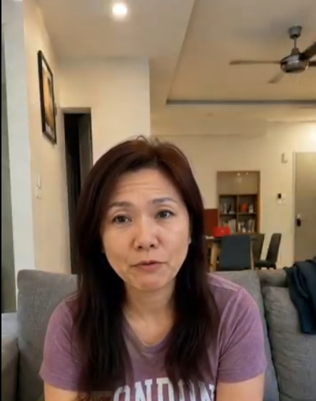
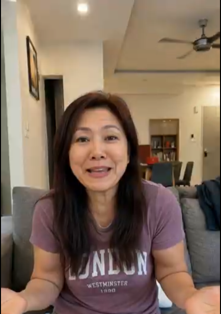

The Warmth of Connection: How Susan Transformed Quiet Evenings into Shared Joy

Home is more than just a place to rest—it is a sanctuary where our fondest memories take root. Finding simple ways to share our daily lives with family and friends can turn a quiet room into a space brimming with warmth and connection.
Unwinding in her cozy living room after a busy week, Susan sat comfortably on her gray sofa. As she looked around her peaceful home, a gentle realization struck her: while solitude was restorative, sharing heartfelt stories and life updates with her distant relatives was what truly filled her heart with genuine happiness.
1. The Beauty of Staying Connected: Nurturing Lifelong Bonds
Reaching out to those we care about creates a ripple effect of positivity that brightens both our day and theirs:
Heartfelt Communication: Sharing honest moments and everyday reflections deepens relationships regardless of distance.
Comfortable Spaces: Transforming home downtime into meaningful catch-ups makes every evening feel purposeful and full.
Mutual Encouragement: Exchanging uplifting words brings a renewed sense of optimism and belonging to everyone involved.

2. A Radiant Smile: Celebrating Life’s Small Delights
Deciding to start a video call with her family, Susan’s posture immediately brightened. As familiar, loving faces appeared on her screen, all remaining fatigue dissolved into pure excitement.
With open hands and a glowing smile, she enthusiastically shared the latest good news from her week. Her expressive laughter echoed through the room, reminding her that genuine happiness grows when it is freely shared with others.
“When we open our hearts and share our joys, even the simplest evening becomes a cherished memory.”
Her family’s warm responses filled the room with vibrant energy, leaving Susan with a profound sense of gratitude for the tight-knit circle of support in her life.
Summary
Staying connected with loved ones brings endless warmth to our hearts and brightens our daily routines. By making time for sincere conversations and open expressions of care, we create lasting bonds of happiness.
Take a moment today to reach out to someone special, share a smile, and celebrate the beautiful gift of connection.